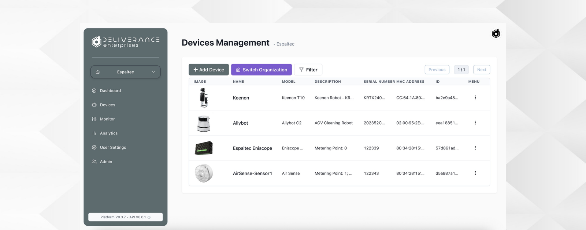
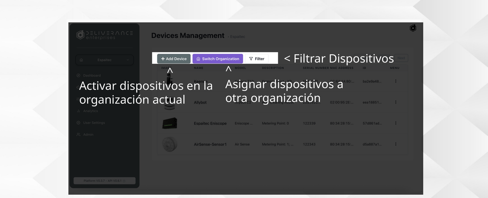
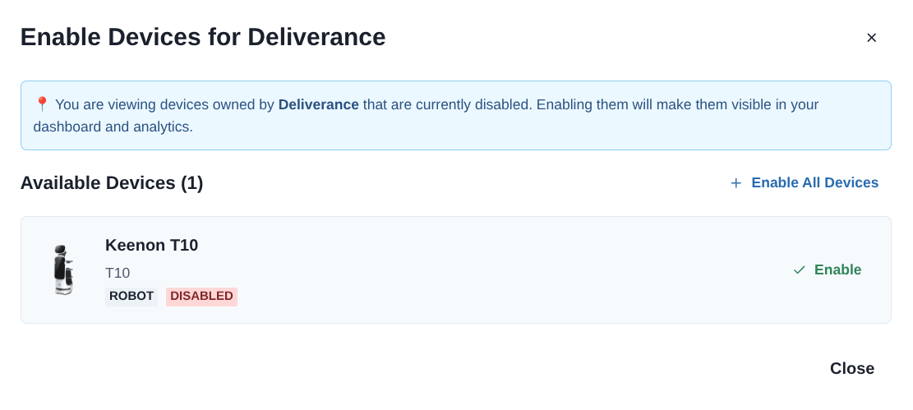
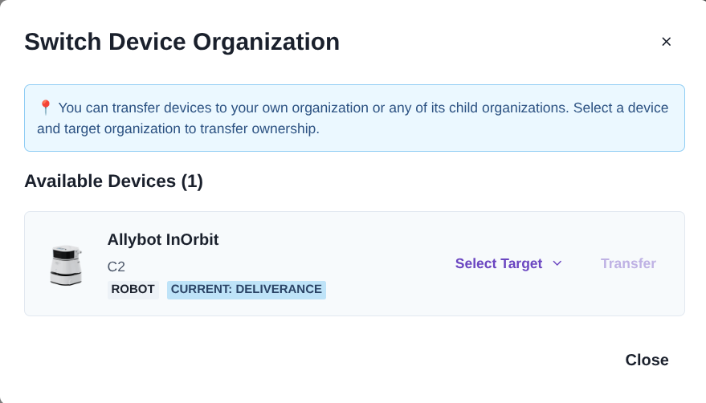
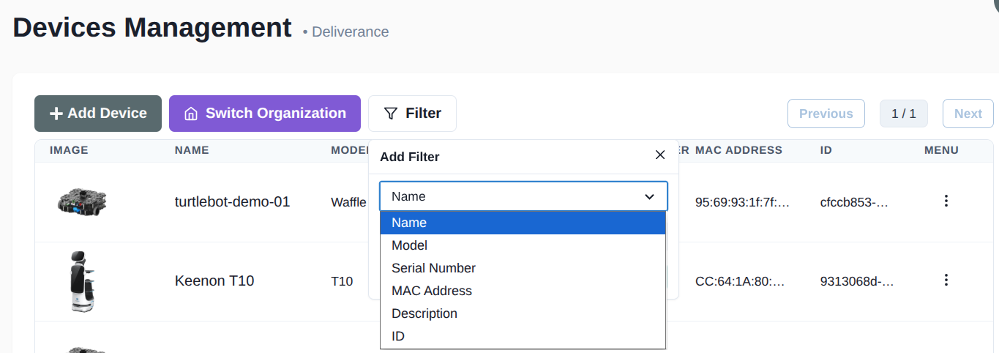
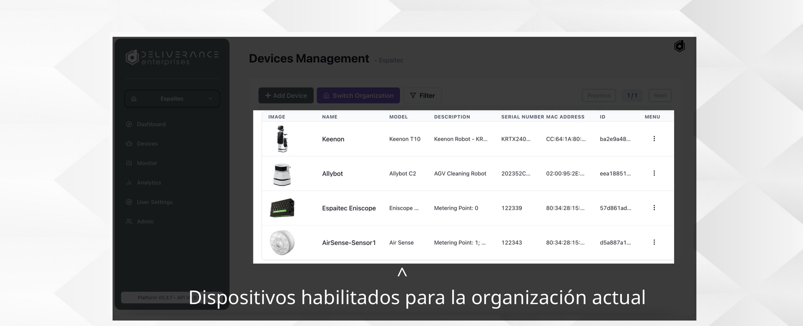
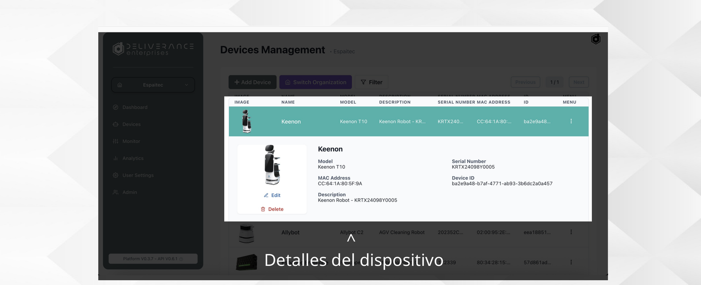
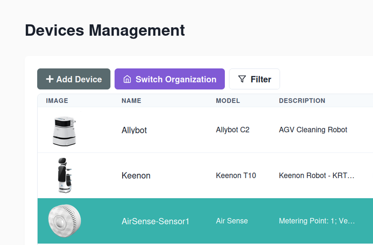
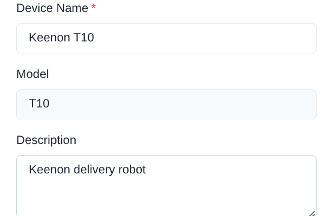

Devices: Gestión de dispositivos¶
Habilita y gestiona dispositivos entre organizaciones.

Acciones disponibles¶

- Activar dispositivos en la organización actual (+ Add Device).
- Asignar dispositivos a otra organización (Switch Organization).
- Filtrar dispositivos (Filter).
Activar un dispositivo¶
Al pulsar + Add Device se abre la lista de dispositivos que pertenecen a la organización pero están deshabilitados. Activarlos hace que aparezcan en el Dashboard y en Analytics.

Se pueden activar de uno en uno con Enable, o todos a la vez con Enable All Devices.
Asignar un dispositivo a otra organización¶
Switch Organization permite transferir un dispositivo a la organización propia o a cualquiera de sus organizaciones hijas. Se elige el dispositivo, se selecciona la organización destino en Select Target y se confirma con Transfer.

Filtrar el listado¶
Filter permite acotar la lista por Name, Model, Serial Number, MAC Address, Description o ID.

Listado de dispositivos¶

Dispositivos habilitados para la organización actual: imagen, nombre, modelo, descripción, número de serie, dirección MAC e ID.
Detalle de dispositivo¶

Al seleccionar un dispositivo de la lista se despliega su ficha con modelo, número de serie, dirección MAC, ID de dispositivo y descripción, además de las acciones Edit y Delete.
La ficha es la misma para cualquier tipo de dispositivo, no solo robots. Este es el detalle de un sensor:

Editar un dispositivo¶
Edit permite modificar el nombre y la descripción. El modelo, el número de serie, la dirección MAC y el ID del dispositivo se muestran como información, pero no son editables.
